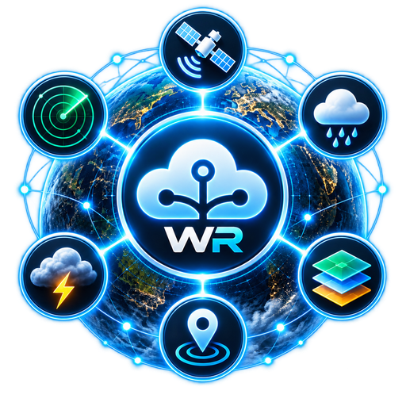

🌧️
Radar & Niederschlag
DWD, OPERA und ergänzende Quellen für regionale und großräumige Darstellungen; Gültigkeit und Datenqualität bestimmt der Router.

Wetterdaten intelligent verbinden.
Ein unabhängiger Router für Wetter-, Umwelt- und Gefahreninformationen. WeatherRouter findet für die gewünschte Fähigkeit geeignete Datenquellen – mit nachvollziehbarer Auswahl, klaren Qualitätsgrenzen und einer zentralen Bedienoberfläche.
Statt einen einzigen Wetteranbieter fest vorzuschreiben, beurteilt WeatherRouter verfügbare Daten anhand von Fähigkeit, Abdeckung, Aktualität, Vertrag und Freigabe. So können unterschiedliche Provider parallel verschiedene Aufgaben erfüllen.
DWD, OPERA und ergänzende Quellen für regionale und großräumige Darstellungen; Gültigkeit und Datenqualität bestimmt der Router.
Numerische Felder und meteorologische Daten für unterschiedliche Visualisierungen in kompatiblen Consumer-Anwendungen.
Hoch- und Tiefdruckgebiete, Isobaren und verfügbare Fronteninformationen auf Grundlage ihrer jeweiligen Datenverträge.
Unterschiedliche offizielle Quellen, Warn- und Ereignisdaten – mit klarer Trennung zwischen Messung, Modell und Meldung.
Pollen, Hydrologie, Erdbeben, Vulkane und weitere Fachbereiche, soweit die jeweilige Capability verfügbar und zugelassen ist.
Provider, Routing-Entscheidungen, Tests, Karten, Protokolle und Diagnosefunktionen in einer zentralen Administrationsoberfläche.
Unabhängige Dienste sollen verfügbare Ergebnisse liefern, auch wenn andere Quellen ausfallen oder verzögert antworten.
Abdeckung, Aktualität und wissenschaftliche Freigaben dürfen nicht durch eine bloße Aktivierung umgangen werden.
Routing-Entscheidungen lassen sich prüfen. Diagnoseexporte werden ausschließlich für das festgelegte private Archiv vorgesehen.
Nicht jede Quelle ist an jedem Ort und zu jeder Zeit verfügbar. Aktivierung und tatsächliche Datenbereitschaft sind unterschiedliche Zustände.
Diese Seite wird mit der Integration lokal ausgeliefert. Für ihre Darstellung sind weder ein CDN noch eine externe Website erforderlich.